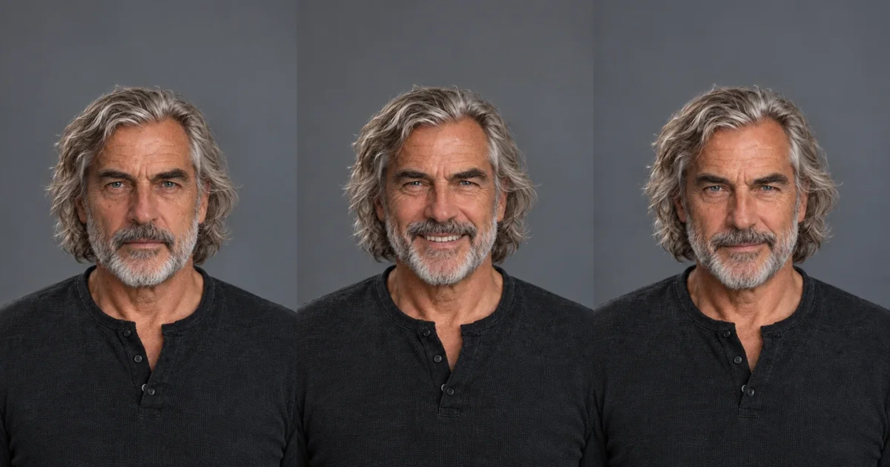
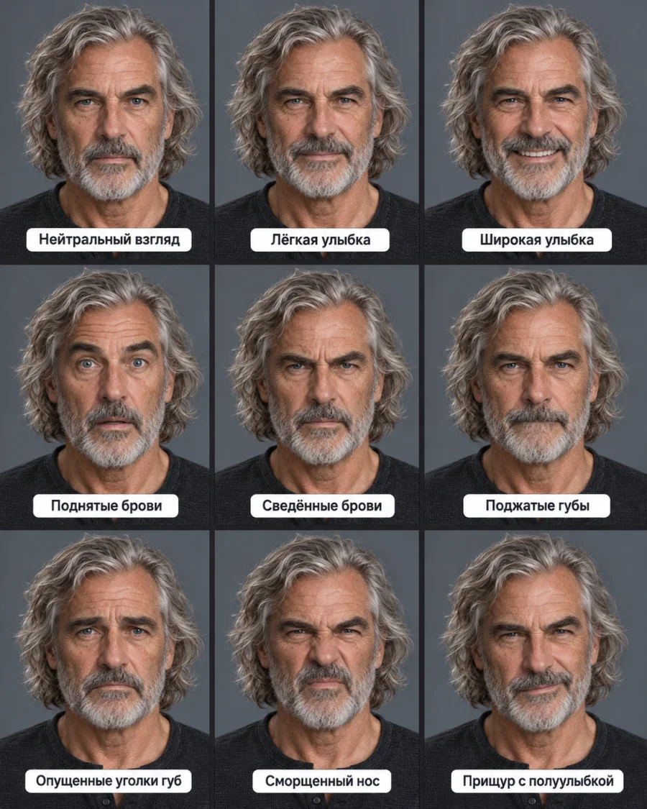
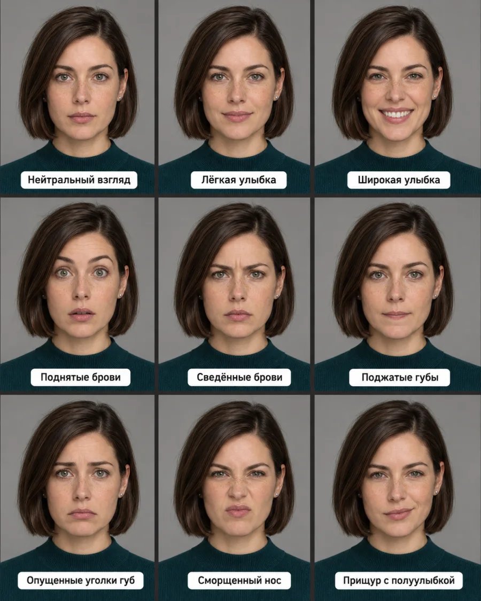
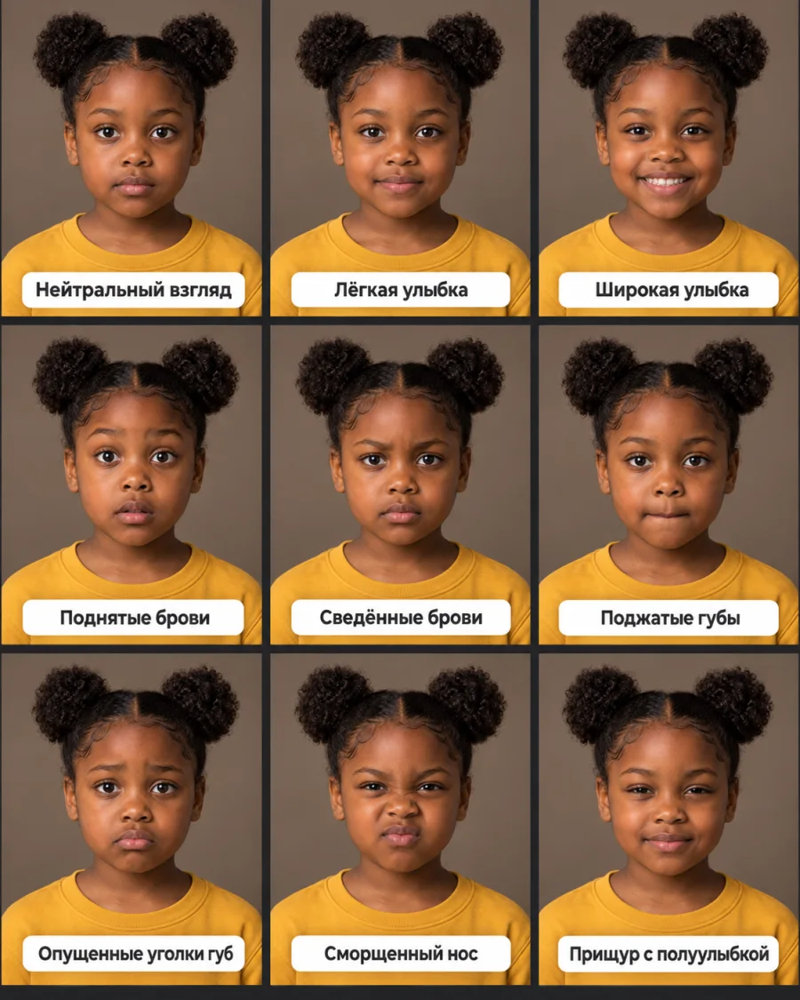
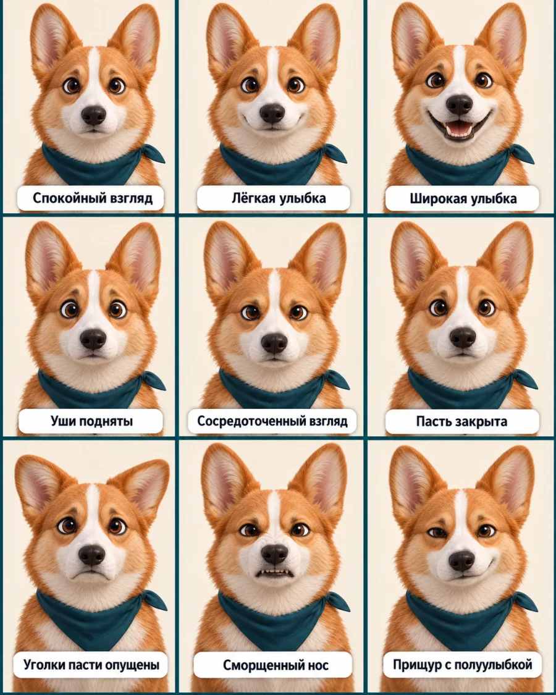

Практика · ChatGPT Images
1 персонаж, 9 выражений лица
Начальный уровень
Сохрани один удачный портрет как эталон и каждый раз прикладывай именно его. В промпте перечисляй лицо, возраст, волосы, одежду, объектив, свет, фон и кадрирование. Затем меняй только положение бровей, век, глаз, носа и губ. Так мимика меняется заметно, а сам персонаж остаётся узнаваемым.

Что сделать прямо сейчас
Сохрани один удачный портрет, открой новый чат, прикрепи этот портрет и вставь базовый промпт ниже. Он фиксирует лицо, волосы, одежду, свет, фон, ракурс и кадрирование. После него добавь одно описание мимики или сразу запроси лист 3x3.
Если лицо поплыло, не исправляй неудачный результат. Открой новый чат и снова приложи исходный эталон. Так мы собрали четыре серии: взрослого мужчину, взрослую женщину, девочку и мультяшного корги.
Сначала зафиксируй эталон
Наш эталон: вымышленный персонаж около 60 лет, длинные свободные седые волосы чуть выше плеч, короткая аккуратная седая борода, чёрная фактурная футболка с пуговицами, прямой взгляд, кадр по грудь, объектив 85 мм, мягкий свет сверху слева, нейтральный серый фон.
Базовый промпт фиксации
Используй прикреплённое изображение как единственный визуальный эталон персонажа. Сохрани без изменений: форму лица, возраст, цвет глаз, длину и укладку волос, бороду (если есть), одежду, телосложение, положение головы, направление взгляда, расстояние до камеры, кадрирование по грудь, перспективу объектива 85 мм, мягкий свет сверху слева, нейтральный серый фон и цветокоррекцию. Голова вертикальна, плечи симметричны, взгляд направлен в камеру. Не меняй личность, возраст, причёску, одежду, свет, фон, ракурс и пропорции. Меняй только указанное выражение лица через брови, веки, глаза, нос и губы.
Один промпт на весь лист 3x3

Используй прикреплённый эталон и создай ровный лист 3x3 с девятью портретами одного и того же персонажа. Во всех ячейках сохрани без изменений лицо, возраст, волосы, бороду (если есть), одежду, положение головы, прямой ракурс, кадрирование по грудь, объектив 85 мм, мягкий свет сверху слева, нейтральный серый фон и цветокоррекцию. Меняется только мимика. Слева направо, сверху вниз: 1. Спокойный прямой взгляд, расслабленные брови и губы. 2. Лёгкая закрытая улыбка, уголки губ слегка подняты. 3. Широкая естественная улыбка с видимыми зубами. 4. Брови подняты, глаза широко раскрыты, рот чуть приоткрыт. 5. Брови сведены к переносице, губы ровные, взгляд прямой. 6. Губы плотно сжаты, брови почти нейтральны. 7. Внутренние уголки бровей приподняты, уголки губ опущены. 8. Нос сморщен, верхняя губа слегка поднята, глаза прищурены. 9. Глаза прищурены, одна сторона губ поднята в сдержанной полуулыбке. Одинаковый масштаб лица во всех девяти ячейках. Не добавляй новые аксессуары и не меняй фон.
Девять отдельных промптов для мимики
К каждому варианту прикладывай исходный эталон, а не предыдущую генерацию. Мы называем только то, что видно на лице, без психологических диагнозов.
1. Спокойный прямой взгляд
Сохрани персонажа, одежду, свет, фон, ракурс, объектив, положение головы и кадрирование точно как в эталоне. Измени только выражение лица: расслабленные брови, открытые глаза, ровные закрытые губы, прямой спокойный взгляд в камеру.
2. Лёгкая закрытая улыбка
Сохрани персонажа, одежду, свет, фон, ракурс, объектив, положение головы и кадрирование точно как в эталоне. Измени только выражение лица: уголки губ слегка подняты, губы закрыты, щёки приподняты совсем немного, глаза смотрят прямо в камеру.
3. Широкая улыбка
Сохрани персонажа, одежду, свет, фон, ракурс, объектив, положение головы и кадрирование точно как в эталоне. Измени только выражение лица: широкая естественная улыбка с видимыми зубами, щёки подняты, у внешних уголков глаз лёгкие складки.
4. Поднятые брови
Сохрани персонажа, одежду, свет, фон, ракурс, объектив, положение головы и кадрирование точно как в эталоне. Измени только выражение лица: обе брови подняты, глаза широко раскрыты, верхние веки видны, рот слегка приоткрыт.
5. Сведённые брови
Сохрани персонажа, одежду, свет, фон, ракурс, объектив, положение головы и кадрирование точно как в эталоне. Измени только выражение лица: брови сведены к переносице и слегка опущены, взгляд прямой, губы закрыты и остаются ровными.
6. Поджатые губы
Сохрани персонажа, одежду, свет, фон, ракурс, объектив, положение головы и кадрирование точно как в эталоне. Измени только выражение лица: губы плотно сжаты в тонкую ровную линию, челюсть не выдвигать, брови и глаза почти нейтральны.
7. Опущенные уголки губ
Сохрани персонажа, одежду, свет, фон, ракурс, объектив, положение головы и кадрирование точно как в эталоне. Измени только выражение лица: внутренние уголки бровей немного подняты, нижние веки мягкие, уголки закрытых губ опущены.
8. Сморщенный нос
Сохрани персонажа, одежду, свет, фон, ракурс, объектив, положение головы и кадрирование точно как в эталоне. Измени только выражение лица: нос сморщен, верхняя губа слегка поднята, глаза прищурены, брови чуть опущены.
9. Прищур с полуулыбкой
Сохрани персонажа, одежду, свет, фон, ракурс, объектив, положение головы и кадрирование точно как в эталоне. Измени только выражение лица: глаза узко прищурены, одна сторона губ слегка поднята в сдержанной асимметричной полуулыбке.
Как уменьшить изменение лица, одежды и света
- Всегда возвращайся к одному исходному эталону. Не делай третью картинку из второй, а четвёртую из третьей.
- Перечисляй постоянные признаки отдельно. Фраза «тот же персонаж» слабее, чем список из лица, возраста, волос, одежды, света, фона, ракурса и кадрирования.
- Меняй одну переменную за раз. Не проси одновременно новую мимику, позу, одежду и место.
- Слово «грусть» слишком расплывчато. Опиши положение бровей и уголков губ: внутренние уголки бровей подняты, уголки губ опущены.
- Если важен один кадр, генерируй его отдельно. Лист 3x3 удобен для выбора, но в маленьких ячейках у модели меньше места для деталей.
- При заметном дрейфе начинай новый чат с исходным эталоном и базовым промптом.
Проверили на четырёх разных персонажах
На листе с седовласым мужчиной во всех девяти кадрах сохраняются волосы, борода и одежда. Меняются брови, глаза и уголки губ.
У женщины во всех кадрах остаются прежними причёска и одежда. Меняется взгляд и выражение лица.
У девочки с двумя круглыми пучками показаны те же девять вариантов эмоций. Пучки и жёлтая футболка остаются на месте.
Мультяшная корги тоже умеет улыбаться. На её листе выражение читается даже по положению ушей, при этом окрас и платок остаются теми же.



Честные ограничения генерации
Генерация не даёт пиксельной копии лица. Между ячейками могут немного меняться форма глаз, зубы, морщины, длина отдельных прядей и ширина лица. Чем сильнее мимика, тем выше риск дрейфа. Текстовые подписи внутри картинки тоже могут ошибаться, поэтому для публикации лучше наложить подписи отдельно после генерации.
Редактор ChatGPT может затронуть область шире выделенной. Если нужна серия для рекламы, а не быстрый визуальный тест, выбери лучшие кадры и проверь лицо, одежду, свет и ракурс вручную перед публикацией.
Если результат всё равно плывёт
Я создаю серию одного персонажа по прикреплённому эталону. Сравни новый результат с эталоном по восьми пунктам: форма лица, возраст, глаза, волосы, одежда, свет, фон, ракурс. Назови только отличия и перепиши мой промпт так, чтобы исправить их. Веди меня по одному изменению за раз и жди моего ответа.
Источники
Что можно делать с нейросетями, если не знаешь кода?
Чтобы почувствовать размах, посмотри Концентрат Ивана Сергеева. ИИ-агенты на твоих глазах собирают продукт, контент, сайты и воронки без кода. Это основа под любую цель: свои услуги, партнёрка, чужой бизнес. Три дня бесплатно, VIP с четвёртым днём - 990 ₽
Забрать КонцентратУже знаешь, чего хочешь? Тогда в мастер-группу Ивана: система продаж на ИИ без продюсера и технаря, сопровождение и сообщество
Заполнить анкету предзаписиНабор открывается редко, кто записался заранее, получает лучшую цену и бонусы. Платить сейчас не нужно
Реклама. ИП Сергеев И. С., ИНН 352511695540. erid: 2Vtzqvk2p6q